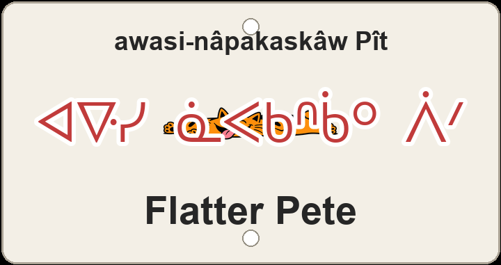

"even flatter Pete"

3D-printed sign preview — even flatter happy cat stretched out longer (screenprint); syllabics ᐊᐍᓯ ᓈᐸᑲᐢᑳᐤ ᐲᐟ and the English name.
Flatter Pete is Terwillegar wordplay pushed one notch further: English reads like a deflated Pete who has been squashed even flatter, and the plaque keeps that joke in nêhiyawêwin as awasi-nâpakaskâw Pît 'even-flatter-ground Pete'. awasi- 'more, beyond' stacks onto the same nâpak- 'flat' root and -askâw 'land/ground is…' pattern as sibling trail Flat Pete (Pît nâpakaskâw), so the name names terrain — not a trail word — while Pît stays a phonetic ᐲᐟ beside the Cree flatness.
English flatter carries a second joke: beside the comparative profile it can also mean to compliment — so the trail flatters Pete as it flattens him. The screenprint makes the visual pun explicit: an even flatter, more stretched-out happy cat, grinning wide and loving every limp inch. Two renderings stay off the plaque but show other readings: nawac nâpakâw Pît 'Pete is more flat' states the comparison plainly; Pît kâ-awasi-nâpakât 'Pete, the even-flatter one' turns the joke into a relative-clause trail name.
On the same Terwillegar hillside the nicknames answer each other: sibling Flat Pete (Pît nâpakaskâw) sets the baseline; Dave's Trail (Têv omeskanaw), Upper Corkscrew (ispimihk wâwaniyâw meskanaw), Curvin Murvin (wâwani-meskanaw), Hyperloop (kayipî-wâsâkêwayiw), the GO Trail pair (itohtê meskanaw and itohtê meskanaw amaciwêwin), Dancing with the Trees (nîmihitom mistikwak wîcêwakan), and Switchback Slicer (wâni-meskanaw kîskatahikêw) braid English humour into one local web beside Logarythmic (mistiko-akihcikêwin), Oleskiw Meadow (Olêskîw maskosiskâw), and Terwillegar - 7 (Têrwiligar têpakohp).
Like every sign in this series, Flatter Pete sits on ᓀᐦᐃᔭᐤ ᐊᐢᑭᕀ Nêhiyaw-Askiy — Plains Cree territory, Treaty 6, and a homeland of the Métis Nation. These plaques are one way of putting nêhiyawêwin back on the land it was always spoken on.
A ~2 km Terwillegar line with about 4 m of climbing and 4 m of descent — a nearly flat ribbon that earns its nickname one step beyond Flat Pete. Tap through to Trailforks on the poster for the mapped line and rider reports.
Explore the trail on Trailforks, with a local preview from the uploaded GPX.
nawac 'more' + flat.
Relative-clause trail name.
| English | SRO | Syllabics |
|---|---|---|
| even flatter Pete | awasi-nâpakaskâw Pît | ᐊᐍᓯ ᓈᐸᑲᐢᑳᐤ ᐲᐟ |
| Pete is more flat | nawac nâpakâw Pît | ᓇᐗᐨ ᓈᐸᑳᐤ ᐲᐟ |
| Pete, the even-flatter one | Pît kâ-awasi-nâpakât | ᐲᐟ ᑳ ᐊᐗᓯᓈᐸᑳᐟ |
| flat (root) | nâpak- | ᓈᐸᑲ |
| more, beyond (prefix) | awasi- | ᐊᐍᓯ |
| Pete (phonetic) | Pît | ᐲᐟ |
SRO uses ê î ô â. Syllabics match the SRO shown.
Dialectal preferences may affect minor spelling choices; check local norms for signage.
References: itwêwina, Online Cree Dictionary, Plains Cree Dictionary
Each sign is 3D printed in Edmonton. Want one for your own trail, cabin or wall? Email hello@nehiyomtb.ca.